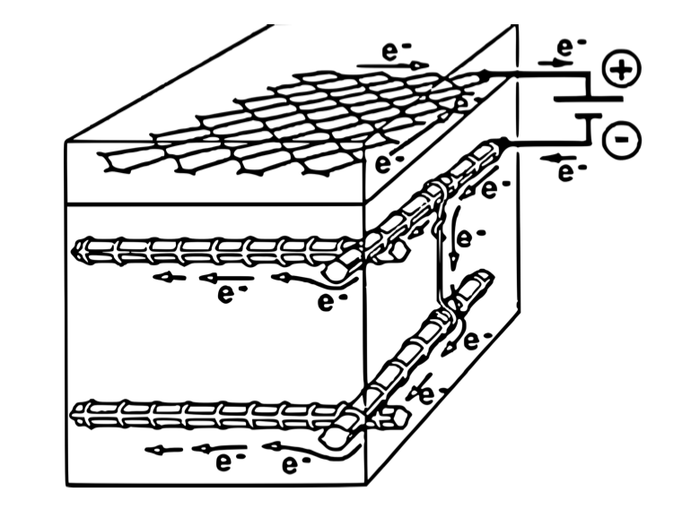

Cathodic protection
Cathodic protection is a process where we want to reverse the phenomenon of carbonatation. Indeed, our goal is to regenerate HO- ions. In order to do so, we will use elecrolysis. Electrolysis consists of sending an electric current from an anode to the cathode of the reinorced concrete. The conductive anode has to be linked to the concrete with an electrolyte paste for the current to pass.
Scheme of cathodic protection by electrolysis
As there is water in the concrete because of carbonatation, the electrons sent will transform the water into HO- ions and dihydrogen. It is represented by the following chemical equation :
$$H_2O(l) + e^- \rightarrow \frac{1}{2}H_2(g) + HO^-(aq)$$
Concrete will be regenerated and protected by this current.
Problem about cathodic protection
However, according to our calculations, cathodic protection requires a huge amount of electricity to regenerate a building. We can vary a lot of parameters to reduce this amount of electricity including the efficience of the electrolyte paste or the material used for the anode.
Other approach : targetting high risk zones